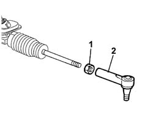

4110B14 STEERING LINKS - R+R WITH STEERING BOX REMOVED
- Path
- Procedures > 41 STEERING UNIT > 4110 STEERING CONTROL AND LINKAGE > 4110B STEERING CONTROL LINKAGE > 4110B14 STEERING LINKS - R+R WITH STEERING BOX REMOVED
- Kind
- repair procedure (removal / refitting; the operation number is the code)
- Applies to
- all engines; all production periods
- Interactive page
- https://sloeber94.github.io/elrnDB-fDbl/en/#/2584715
Applies to: all engines; all production periods
 Removing
Removing
 Refitting
RefittingMeasure the length of the steering rods to be used for refitting.
1. Loosen the nuts securing the steering rods.
2. Unscrew the steering rods from the steering box and remove them.

Applies to: all engines; all production periods
Refitting
RemovingScrew the steering rods onto the steering box.
Check that length of the adjustable steering rods is the same as that measured during the removal.
Tighten the adjustable rod nuts to torque.
 | Fastening | Component | Ø | Value (daNm) |
|---|---|---|---|---|
- | - | - | - | - |